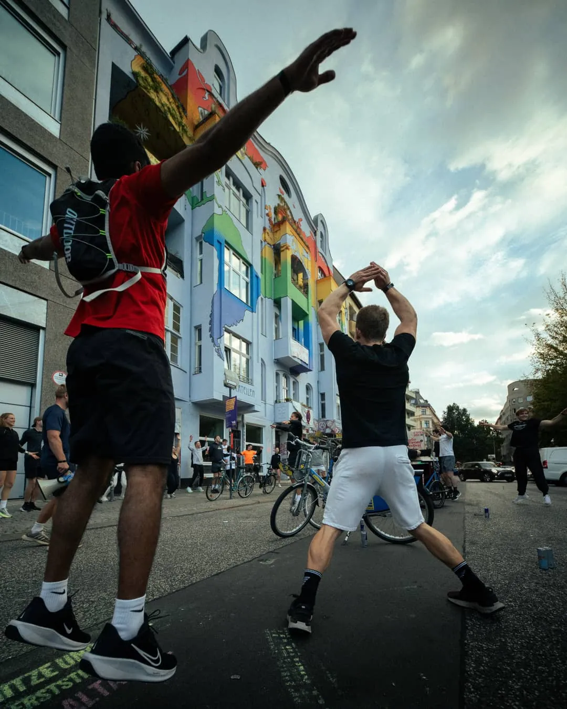
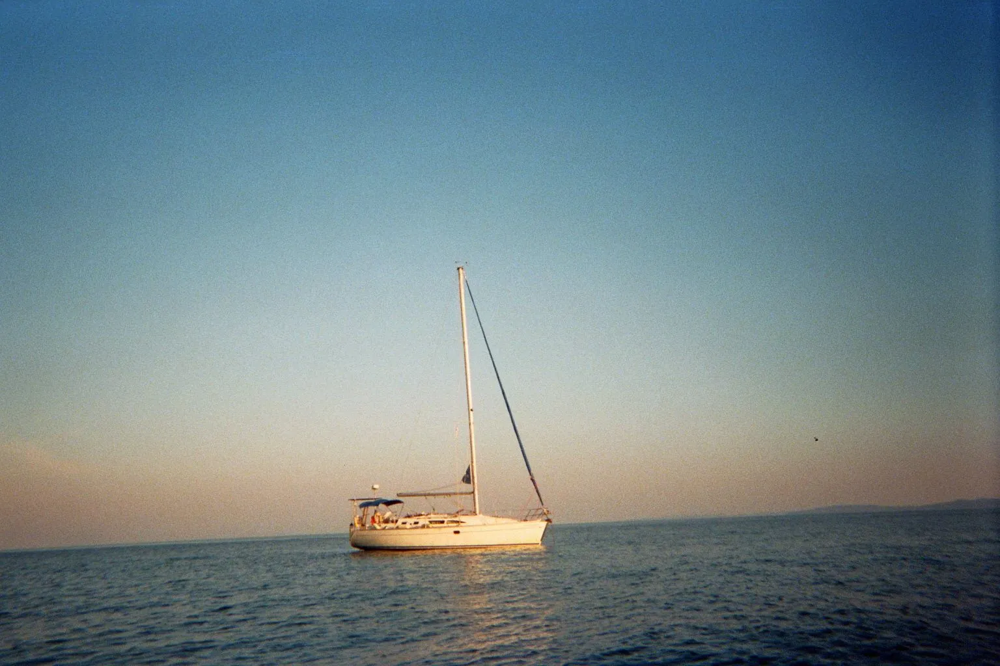
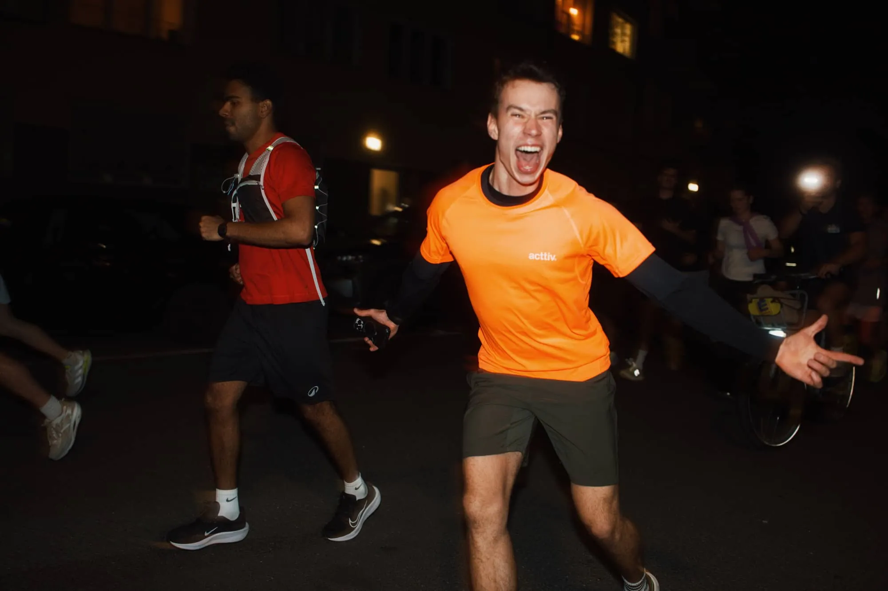
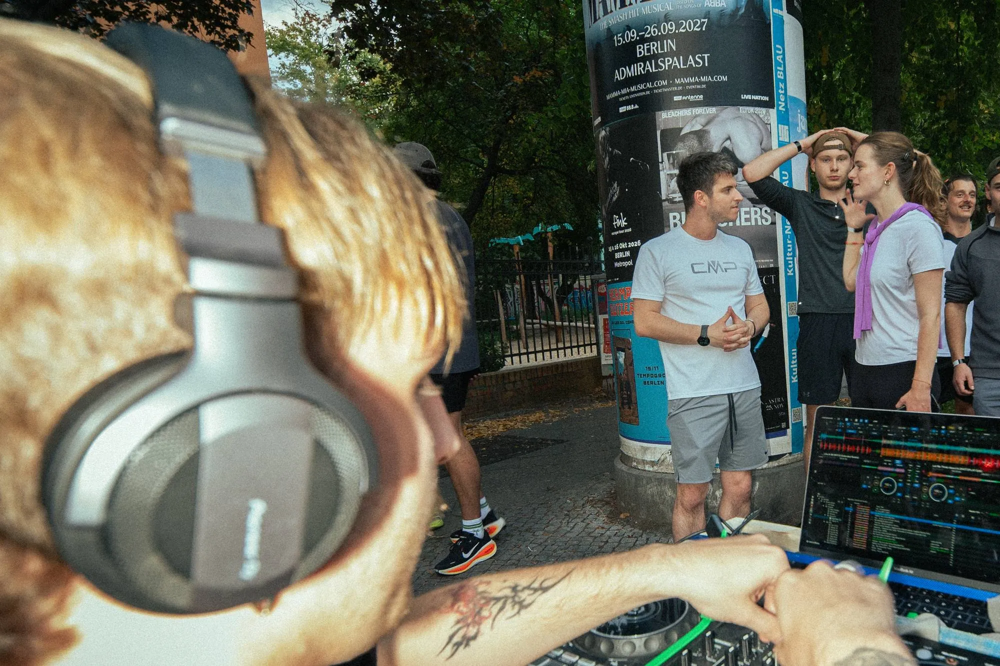
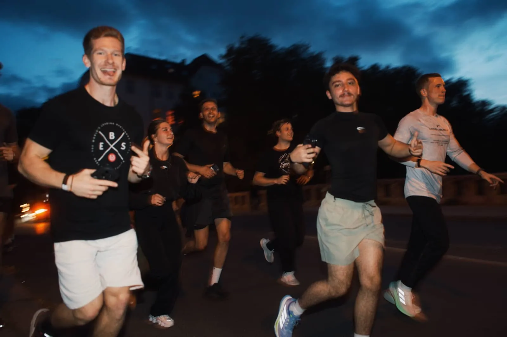
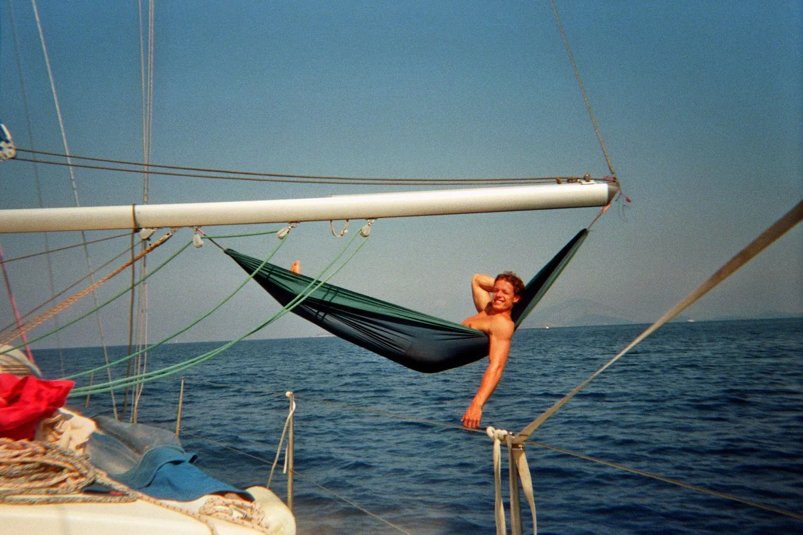
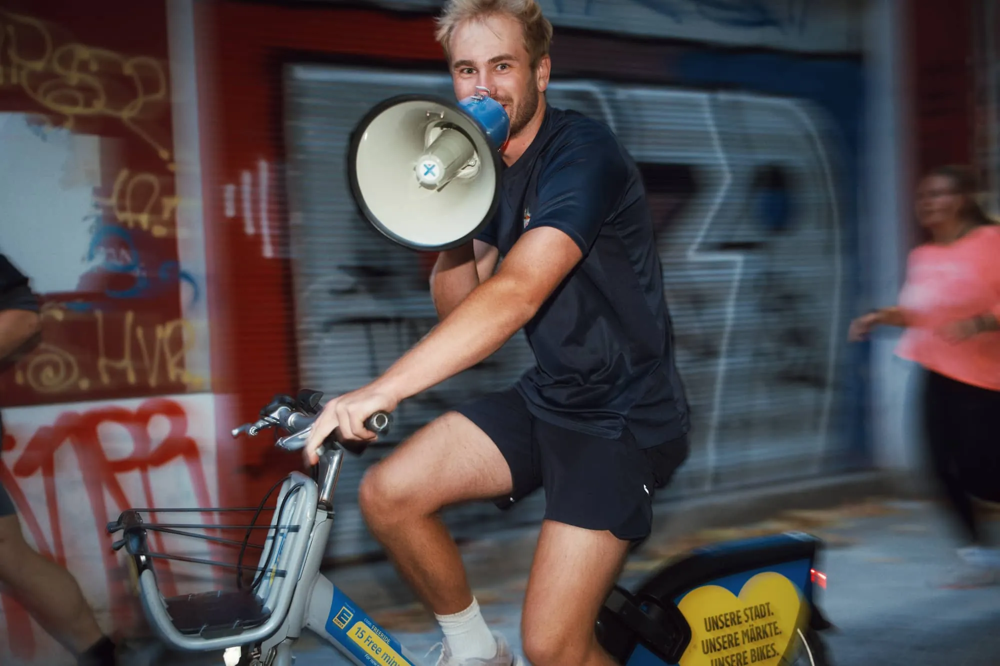
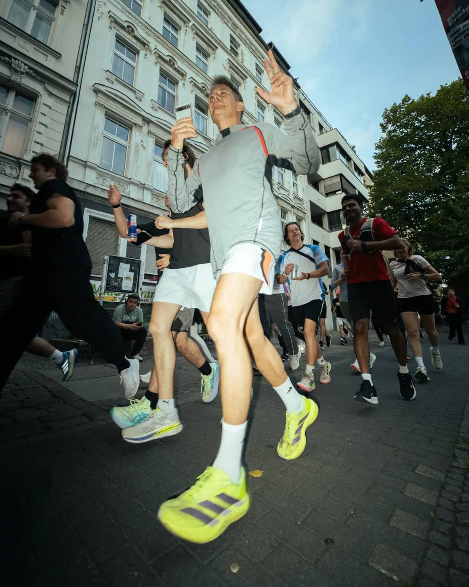
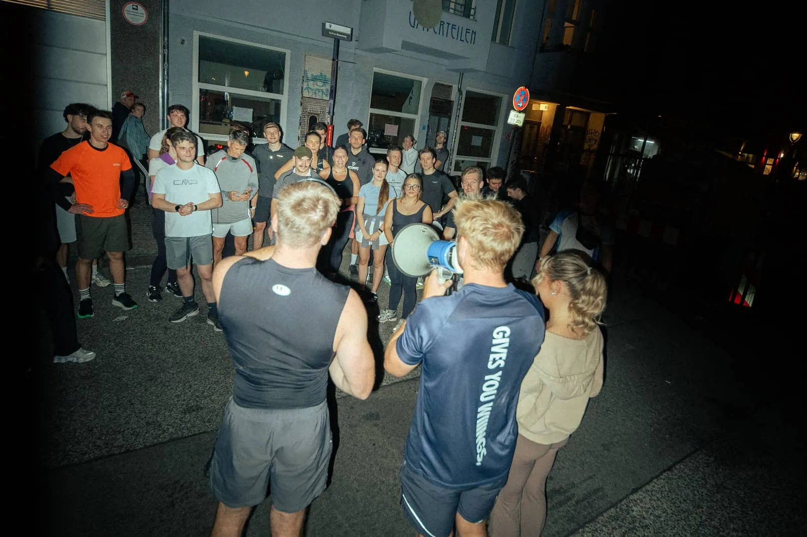

Gallery
This is what it looks like when we’re there.
Night runs through Berlin, sailing days off Corfu: here are the photos from our events and content shoots. Tap a photo to see it large.
























Your event next?
We plan it, run it and deliver the content too.